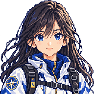
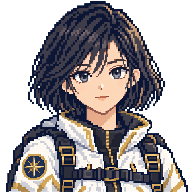
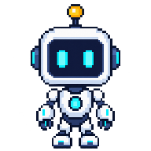

航向者 · 程以宁
navigator · 96 / 192 / 384 WebP探路者 · 许行舟
pathfinder · 96 / 192 / 384 WebP造物者 · 江予川
maker · 96 / 192 / 384 WebP解码者 · 夏长庚
decoder · 96 / 192 / 384 WebP协同者 · 晏子仪
collaborator · 96 / 192 / 384 WebP
守正者 · 南容
guardian · 96 / 192 / 384 WebP
当前课程学习伙伴 · 原创机器人
robot · 96 / 192 WebP三个独立环境
透明棋盘格只用于检查边缘；缩放仅最近邻、无损 WebP。场景通过独立资源接入，真实航迹和数据仍由原引擎生成。图片不播放动作、粒子或视差。